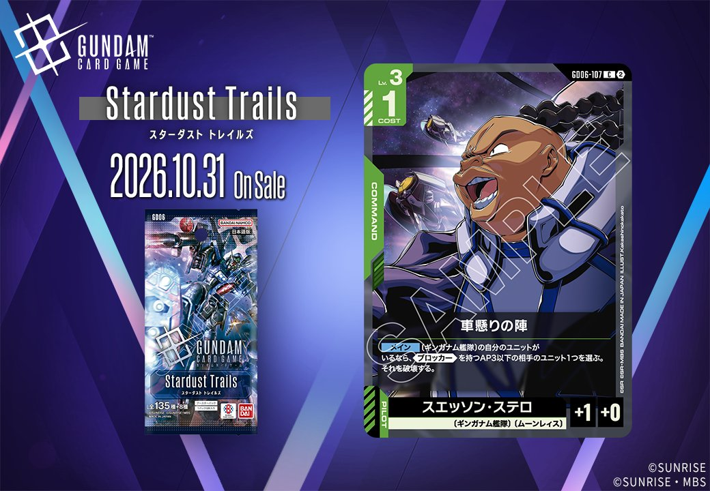
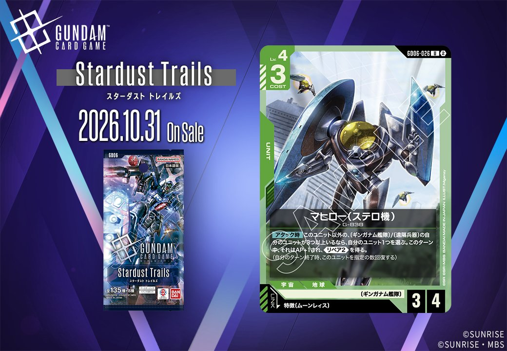

今回は、2026年10月31日発売の拡張パック「GD06」より、緑のカード2枚をご紹介します。1枚は COMMAND の「車懸りの陣」(GD06-107)、もう1枚は特徴にムーンレイスを持つパイロットをリンク条件に指定する UNIT「マヒロー(ステロ機)」(GD06-026)です。同じ緑でもカードタイプの異なる2枚となっており、それぞれの役割を順に見ていきます。

車懸りの陣 (GD06-107)
| 色 | 緑 | タイプ | COMMAND |
| Lv | 3 | コスト | 1 |
| パイロット | スエッソン・ステロ（補正 AP+1 / HP+0） 〔ギンガナム艦隊〕、〔ムーンレイス〕 | ||
効果: 【メイン】〔ギンガナム艦隊〕の自分のユニットがいるなら、《ブロッカー》を持つAP3以下の相手のユニット1つを選ぶ。それを破壊する。
コスト1のコマンドで、【メイン】に〔ギンガナム艦隊〕の自分のユニットがいることを条件に、《ブロッカー》を持つAP3以下の相手のユニット1つを破壊します。対象が《ブロッカー》持ちかつAP3以下に限定されているため、汎用除去ではなく、攻撃を受け止める壁を狙って排除する用途に特化した1枚です。緑の採用率上位には【アタック時】に自身をAP+2するザクⅡ(23.3%)などのアタッカーがおり、こうしたユニットの進路上にいる小型のブロッカーを事前に処理できる点は噛み合います。一方で発動には〔ギンガナム艦隊〕の自分のユニットが必要で、相手側にAP3以下のブロッカーがいなければ腐るため、構築と対面を選ぶ条件付きの除去として見るのが妥当です。

マヒロー(ステロ機) (GD06-026)
| 色 | 緑 | タイプ | UNIT |
| Lv | 4 | コスト | 3 |
| AP | 3 | HP | 4 |
| 特徴 | 〔ギンガナム艦隊〕、〔遠隔兵器〕 | ||
| リンク条件 | 特徴にムーンレイスを持つPILOT | ||
効果: 【アタック時】このユニット以外の〔ギンガナム艦隊〕/〔遠隔兵器〕の自分のユニットが3つ以上いるなら、自分のユニット1つを選ぶ。このターン中、それはAP+1され、《リペア2》を得る。(自分のターン終了時、このユニットを指定の数回復する)
コスト3でAP3/HP4と、HPに寄せた数値配分のユニットです。【アタック時】の条件は自身以外の〔ギンガナム艦隊〕/〔遠隔兵器〕のユニットが3つ以上と横並びが前提で、達成には展開が必要ですが、対象は「自分のユニット1つ」で特徴の指定がないため、アタックしていないユニットにもAP+1と《リペア2》を渡せます。《リペア2》は自分のターン終了時の回復なので、ブロック後の立て直しに向きます。《突破2》を持つリック・ドムにAP+1を乗せればバトルに勝ちやすく、シールドエリアへのダメージにつながります。リンクは特徴にムーンレイスを持つパイロットで、搭載先の選択が運用の鍵になります。


関連カード
-
 ザクⅡ(ST03-008)緑系デッキ内採用率23.3% (1616デッキ)
ザクⅡ(ST03-008)緑系デッキ内採用率23.3% (1616デッキ) -
 リック・ドム(GD01-030)緑系デッキ内採用率22.4% (1557デッキ)
リック・ドム(GD01-030)緑系デッキ内採用率22.4% (1557デッキ) -
 ザクⅡ（シャア・アズナブル機）(ST03-006)緑系デッキ内採用率14.2% (987デッキ)
ザクⅡ（シャア・アズナブル機）(ST03-006)緑系デッキ内採用率14.2% (987デッキ) -
 シャア・アズナブル(ST03-011)緑系デッキ内採用率13.3% (923デッキ)
シャア・アズナブル(ST03-011)緑系デッキ内採用率13.3% (923デッキ) -
 ジオング(GD04-017)緑系デッキ内採用率11.3% (781デッキ)
ジオング(GD04-017)緑系デッキ内採用率11.3% (781デッキ) -
 アスピーテ(GD06-124)NEW緑系 — 同色・共通特徴: ギンガナム艦隊（新カード）
アスピーテ(GD06-124)NEW緑系 — 同色・共通特徴: ギンガナム艦隊（新カード） -
 メリーベル・ガジット(GD06-087)NEW緑系 — 同色・共通特徴: ギンガナム艦隊（新カード）
メリーベル・ガジット(GD06-087)NEW緑系 — 同色・共通特徴: ギンガナム艦隊（新カード） -
 バンデット(メリーベル機)(GD06-022)NEW緑系 — 同色・共通特徴: ギンガナム艦隊（新カード）
バンデット(メリーベル機)(GD06-022)NEW緑系 — 同色・共通特徴: ギンガナム艦隊（新カード） -
 ギム・ギンガナム(GD06-085)NEW緑系 — 同色・共通特徴: ギンガナム艦隊（新カード）
ギム・ギンガナム(GD06-085)NEW緑系 — 同色・共通特徴: ギンガナム艦隊（新カード） -
 ターンX(GD06-019)NEW緑系 — 同色・共通特徴: ギンガナム艦隊（新カード）
ターンX(GD06-019)NEW緑系 — 同色・共通特徴: ギンガナム艦隊（新カード）